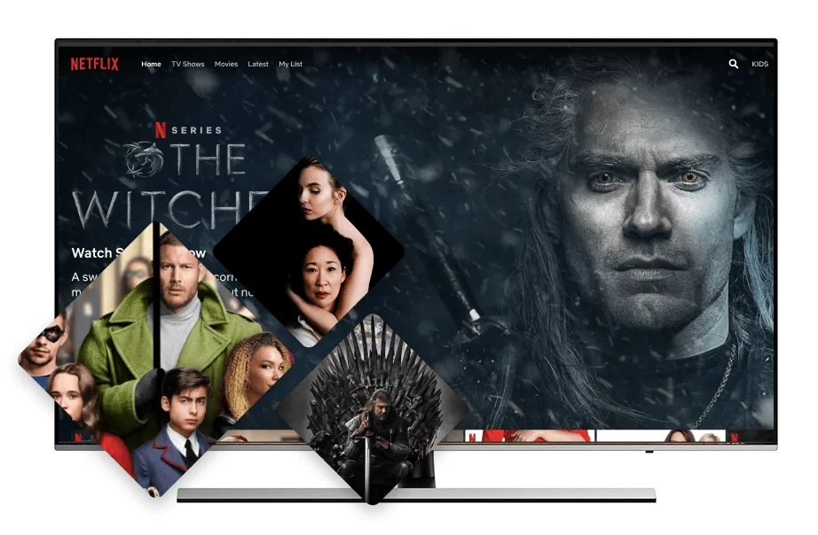

VPN para Apple TV
Configuración de dispositivo de streaming
Apple TV
Ventajas:
- Cifrado de datos seguro
- Fácil de usar en tu dispositivo
- Acceso a 3000 servidores en todo el mundo
- Garantía de devolución de 30 días

VPN para Apple TV
Protege el tráfico en Apple TV con VPN Unlimited, oculta tu IP y conéctate a un servidor VPN privado en segundos.
Obtén VPN Unlimited para otras plataformas
Descarga la aplicación VPN para otras plataformas y para Windows. ¡Rápida, segura y sin límites!
Prueba gratis de 7 díasGarantía de devolución de 30 días